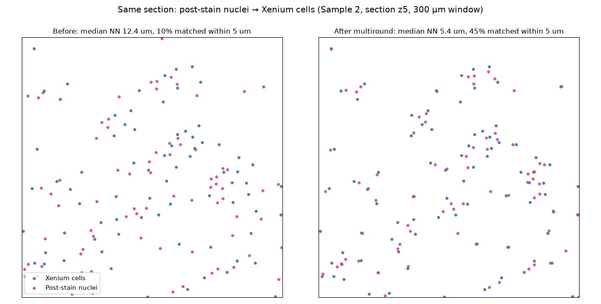
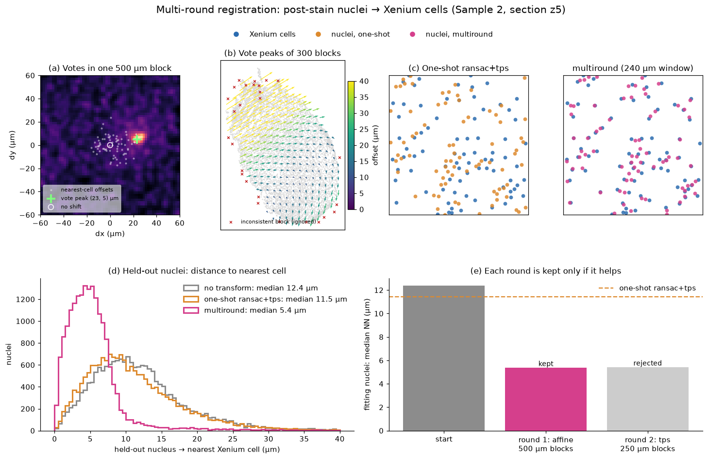
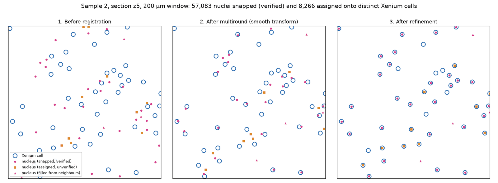

Register spatial omics modalities¶
This guide shows you how to bring two spatial datasets into one coordinate system with SMINT: post-stain nuclei onto Xenium cells from the same section, or spatial metabolomics (SM) onto spatial transcriptomics (ST) from a neighbouring section. Each task is shown in Python and on the command line. For how the methods work and why there are two of them, read Choosing a registration method and Coordinate frames.
Pick the path for your data¶
flowchart TD
S[Two datasets to align] --> Q{Acquired on the<br/>same physical section?}
Q -- "yes: post-stain imaging<br/>of the Xenium section" --> C0[Segment nuclei<br/>see Segmentation]
C0 --> C1["Centroid registration<br/>register_centroids · smint-alignment centroid"]
C1 --> C2[Snap matched nuclei<br/>onto their cells]
Q -- "no: sequential sections<br/>e.g. MALDI next to Xenium" --> P[Coarse pre-registration<br/>scale · rotate · flip]
P --> L[Place matching landmarks<br/>napari plugin]
L --> D["STalign LDDMM<br/>register_sm_to_st · smint-alignment st-sm"]
C2 --> O[One coordinate system]
D --> O| Your data | What is true | Use |
|---|---|---|
| Same section, imaged again after the Xenium run | Each nucleus really corresponds to one Xenium cell | Centroid registration |
| Sequential sections (e.g. MALDI on the next section) | The tissue differs between sections; no cell-to-cell correspondence | STalign LDDMM |
Do not use centroid registration on sequential sections
It will return a number, but it fits noise: nearest-neighbour "correspondences" between different sections pair cells that are merely close, not the same cell.
Before you start: check your coordinate columns¶
Tables often carry several coordinate pairs from earlier processing steps
(x_centroid next to x_new and x_final, say). Registering the wrong pair
does not raise an error; it silently misregisters. List the columns first:
$ smint-alignment columns cells.csv
2 columns in cells.csv:
x_centroid <- auto-detected
y_centroid <- auto-detected
When you leave columns out, ST tables are auto-detected in the order
x_final, x_centroid, centroid_x, x_transformed, x, and the choice is
logged. Pass them explicitly whenever the table holds more than one pair.
Register a post-stain onto the same section¶
Use this when nuclei segmented from a post-Xenium stain (DAPI, H&E, IF) have to land on the Xenium cells of the same section. Both inputs are centroid tables in µm; see Use the results for registration for turning segmentation output into one.
smint-alignment centroid \
--source nuclei.csv --source-cols centroid_x centroid_y \
--target cells.csv --target-cols x_centroid y_centroid \
--output-dir results/same_section --watch
This registers with the default multiround method, snaps matched nuclei
onto their cells, and writes results/same_section/centroids_transformed.csv
plus status.json with the quality metrics. Add --submit to run it as a
SLURM job (Running on HPC).
from smint.alignment import register_centroid_files
table, result = register_centroid_files(
"nuclei.csv", "cells.csv",
source_cols=("centroid_x", "centroid_y"),
target_cols=("x_centroid", "y_centroid"),
output_path="results/centroids_transformed.csv",
)
print(result["tre_validation"]) # (mean, sd) on held-out nuclei
print(table["registration_status"].value_counts())
from smint.alignment import register_centroids, refine_by_assignment
result = register_centroids(nucleus_xy, xenium_xy) # (N, 2) and (M, 2), µm
moved = result["transform"](nucleus_xy) # smooth transform only
snap = refine_by_assignment(moved, xenium_xy) # optional snapping step
placed_xy = snap["refined_xy"]

What multiround does¶
Single-round methods match every nucleus to its nearest cell once and fit a
transform to those pairs. When the starting offset is close to the spacing
between cells, most of those pairs are wrong and no fit can recover.
multiround (the default) lets every nucleus vote for the displacements to
several nearby cells within a block of tissue; the true, shared offset piles
up as a peak. Round 1 fits an affine through the block peaks (500 µm blocks);
round 2 votes again in 250 µm blocks and adds a smooth thin-plate spline. A
round is kept only if it improves the alignment.

On Sample 2 z5 (88,906 nuclei, 74,247 Xenium cells about 17 µm apart; held-out nuclei):
| median distance to nearest cell | mutual matches within 5 µm | TRE | |
|---|---|---|---|
| no transform | 12.4 µm | 10% | 11.0 µm |
multiround |
5.4 µm | 45% | 4.9 µm |
The run took 3 s. Other methods (affine, ransac, tps, ransac+tps) are
available through method= / --method; they are compared in
Choosing a registration method.
Snapping nuclei onto their cells¶
A smooth transform leaves each nucleus a few microns from its cell, partly
because a stained nucleus genuinely sits off-centre in its Xenium cell.
register_centroid_files (and so smint-alignment centroid) therefore
follows registration with refine_by_assignment:
- Pair nuclei one-to-one with cells (mutual nearest neighbours within
snap_radius, 10 µm). - Check each pair against its neighbours: its offset must agree with the median offset of the pairs around it.
- Snap pairs that pass exactly onto their cell; move every other nucleus with its snapped neighbours. Repeat for what is left, up to four passes.
- Assign the remaining nuclei to free cells nearby by a one-to-one,
minimum-total-distance assignment, marked
assigned.

On Sample 2 z5, 57,083 nuclei were snapped and 8,266 assigned: 88% of Xenium cells received a distinct nucleus.
assigned pairs are not verified
Each placed nucleus has a neighbour_deviation: how far its offset is
from the median offset of the snapped nuclei around it. On z5 the median
is 4.1 µm for snapped and 8.5 µm for assigned nuclei, so many assigned
pairs sit on a neighbouring cell. Filter on registration_status and
neighbour_deviation, or pass --no-assign-remaining
(refine_kwargs={"assign_remaining": False}).
The output table keeps every input column and adds:
| Column | Meaning |
|---|---|
x_transformed, y_transformed |
Final position (snapped where possible) |
x_transformed_smooth, y_transformed_smooth |
Position after the smooth transform alone |
registration_status |
snapped, assigned, filled (moved with neighbours) or unmoved |
target_index |
Row of the matched Xenium cell, for snapped / assigned |
neighbour_deviation |
Disagreement with the neighbourhood's offset, µm |
Use --no-refine (refine=False) for the smooth transform only.
Register sequential sections with STalign¶
Use this for SM onto ST from a neighbouring section. It needs STalign in a numpy < 2 environment (Installation) and runs in three steps around a manual landmark stage, because choosing matching anatomical features is a biological judgement.

1. Pre-register coarsely¶
SM arrives on its own pixel grid, often rotated or mirrored relative to the ST section and at a different scale. LDDMM does not recover from a gross orientation mismatch, so bring the datasets roughly together first.
The Pre-register widget of the napari plugin shows both datasets and lets you scale, rotate and flip by eye.
$ smint-alignment pretransform --source sm.csv --target st.csv \
--search --output sm_pre.csv
scale : 10.0000, 10.0000
rotation : 150.00 deg
reflects : True
overlap : 1.000
wrote : sm_pre.csv
transform : sm_pre.csv.transform.json
--search tries rotations in 15° steps with and without flips and keeps
the best overlap; or set --rotation, --flip-x, --flip-y yourself.
from smint.alignment import (apply_pretransform, build_pretransform,
describe_pretransform, overlap_score)
matrix = build_pretransform(sm_xy, st_xy, scale_mode="extent",
rotation=30, flip_x=True)
moved = apply_pretransform(sm_xy, matrix)
print(overlap_score(moved, st_xy)) # 0-1, higher is better
print(describe_pretransform(matrix)) # scale, rotation, shear, reflects
To save the result for the next steps, write moved back into the SM
table's x / y columns and save it as sm_pre.csv.
Operations are applied flip → rotate → scale → translate, about the source
centroid. Scale is fitted after orientation is corrected, because
bounding-box extents change under rotation. Scaling is isotropic unless you
ask otherwise (--anisotropic, preserve_aspect=False).
Hand sm_pre.csv on unscaled
sm_pre.csv is already scaled and oriented into the ST frame (µm). Steps 2
and 3 read SM tables through read_sm_matrix, which by default multiplies
x/y by 10 and shifts negative coordinates to ≥ 0. For the pre-registered
table, turn both off: scale_xy=1.0, keep_positive=False in Python
(--scale-xy 1 --no-keep-positive on the command line), and use the
same settings in steps 2 and 3 so the landmarks line up.
If a 90° turn and a fixed pixel pitch are all your data needs, you can
skip sm_pre.csv and register the raw SM CSV with
sm_kwargs={"scale_xy": <pixel pitch>, "rotate_left_90": True} instead,
as Tutorial 3 does.
2. Place landmarks¶
Rasterise both datasets and pick the same anatomical features in the same order on each. Correspondence is positional, so an ordering mismatch silently gives a wrong registration.
from smint.alignment import prepare_landmark_inputs
out = prepare_landmark_inputs(
st_file="st.csv", sm_file="sm_pre.csv", # the step-1 output
output_prefix="landmarks/section_b",
dx=30.0, # raster pixel, µm; reuse it in step 3
st_x_col="x_centroid", st_y_col="y_centroid",
sm_kwargs=dict(scale_xy=1.0, keep_positive=False), # already in the ST frame
)
print(out["st_points"], out["sm_points"]) # where the landmark files will go
This writes landmarks/section_b_st.npz and landmarks/section_b_sm.npz.
Annotate them in the napari plugin's Landmarks widget,
or with STalign's own point_annotator.py (part of the STalign repository,
not SMINT):
Either way you end up with …_st_points.npy and …_sm_points.npy.
How many landmarks?
Spread them over the whole section, including the edges, and favour features that are sharp in both modalities (tissue boundaries, vessels, folds). The Sample 2 example used 11.
3. Run LDDMM¶
smint-alignment st-sm \
--st st.csv --sm sm_pre.csv \
--st-points landmarks/section_b_st_points.npy \
--sm-points landmarks/section_b_sm_points.npy \
--st-x-col x_centroid --st-y-col y_centroid \
--scale-xy 1 --no-keep-positive --dx 30 \
--orientation stalign \
--output-dir results/section_b --watch
The result is results/section_b/sm_transformed.csv. Add --submit
--partition gpuq --gpus 1 to run it on a GPU node.
from smint.alignment import register_sm_to_st, stalign_available
assert stalign_available(), "STalign needs an environment with numpy<2"
sm_moved = register_sm_to_st(
st_file="st.csv", sm_file="sm_pre.csv",
st_points_file=out["st_points"], sm_points_file=out["sm_points"],
output_path="results/sm_transformed.csv",
dx=30.0, niter=1000, epV=200.0,
st_x_col="x_centroid", st_y_col="y_centroid",
sm_kwargs=dict(scale_xy=1.0, keep_positive=False), # same as step 2
orientation="stalign", # x/y in the ST frame
)
The SM table comes back with x_transformed / y_transformed appended. On
Sample 2 (11 landmarks, 459,969 SM pixels, 53,622 ST cells) this took about
72 s on one A30 GPU, and SM pixels ended up a median 16.4 µm from the nearest
ST cell.
Pass orientation=\"stalign\" when you overlay on ST
STalign works in (row, column) order. orientation="stalign" returns true
x/y in the ST frame. The default, "dataset", reproduces the transposed
layout of earlier pipeline runs: plotted over ST it looks mirrored and
misaligned, like a failed registration. See
Coordinate frames.
Tuning LDDMM¶
| Setting | Where | Effect |
|---|---|---|
dx |
--dx, dx= |
Raster pixel size (µm). Too small: sparse, noisy images and slow runs; too large: lost detail. Must be the same in steps 2 and 3. |
niter |
--niter, niter= |
Optimisation iterations (default 1000). Raise it if the result is still changing. |
epV |
--epv, epV= |
Regularisation of the deformation (default 200). Higher gives a smoother, more conservative warp. |
| other STalign options | lddmm_params={...} (Python) |
Forwarded to STalign.LDDMM. Leave sigmaM, sigmaB, sigmaA at their defaults when you use landmarks. |
LDDMM uses the GPU automatically when torch finds one (device= overrides).
Check the result¶
Every centroid registration holds data out of fitting and reports the error on it, because TRE on the pairs a flexible transform was fitted to can be driven to zero regardless of whether the pairs are right.
tre_initial before any transform
tre_fit on the data used for fitting <- not evidence
tre_validation on held-out data <- the number to trust
multiround also reports result["validation"]["before"] and ["after"]:
median distance to the nearest cell and the fraction of mutual matches
within 5 and 10 µm. With the command line, all of this is in the
metrics section of status.json.
- Validation TRE no better than initial: the transform did not help (SMINT
warns). With single-round methods, the starting offset was probably close to
the cell spacing; use
multiround. - Large gap between fit and validation: the transform is memorising correspondences.
- Expect a floor of a few µm: Xenium reports cell centroids, and a nucleus is legitimately off-centre in its cell.
For sequential sections there is no ground truth per cell. Overlay the result on ST (as in the figure above) and check that tissue boundaries and landmark features coincide.
Troubleshooting¶
The SM result looks mirrored or rotated by 90°
Pass --orientation stalign / orientation="stalign". If the input
itself is mirrored, fix it in pre-registration (--flip-x / --flip-y)
and re-place the landmarks.
stalign_available() returns False
STalign needs numpy < 2 (its nptyping dependency uses np.object0,
removed in numpy 2). Run LDDMM in a separate worker environment; see
Installation.
LDDMM runs out of GPU memory or takes very long
Increase dx: the raster grows with the square of 1/dx.
The warp tears tissue apart
Raise epV, check that landmarks are in the same order in both files,
and remove landmarks you are unsure of.
Registration silently lands in the wrong place
Check which coordinate columns were used (smint-alignment columns, and
the log line naming the auto-detected pair).
Next steps¶
- Executed walkthroughs: same-section and sequential-section tutorials
- Do it interactively: napari plugin
- Run it on a cluster: Running on HPC
- All options: Command line · Alignment API